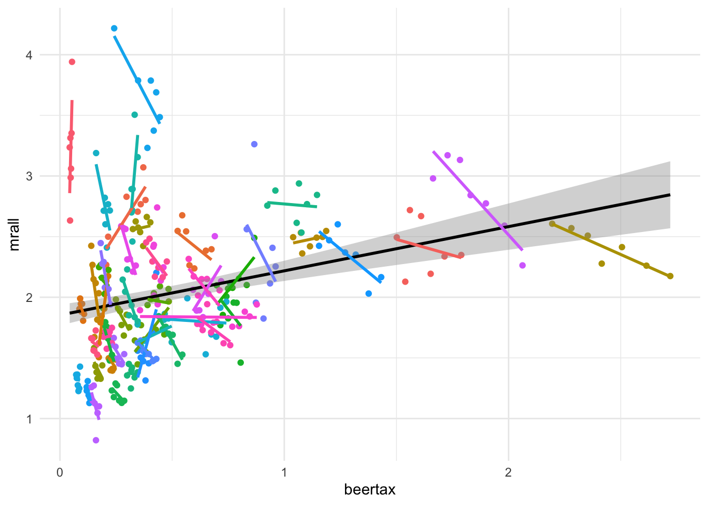
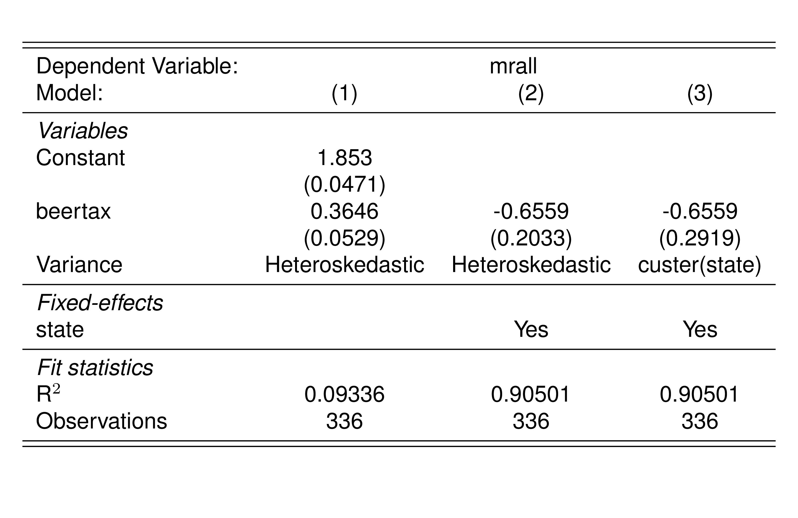
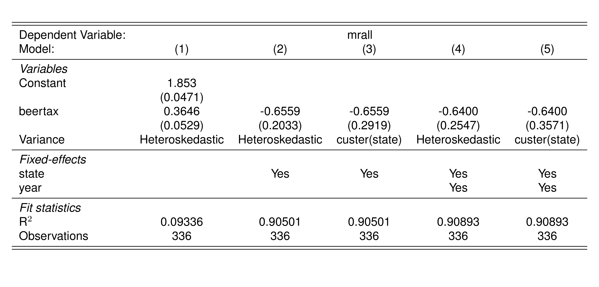

library(Ecdat)
data("Fatality")Panel data
Dati Panel
Il modello \[ y_{it} = \alpha_i + \lambda_t + \beta_1X_{1it} + \dots + \beta_k X_{kit} + u_{it}, \] può essere stimato tramite il metodo dei minimi quadrati ordinari (OLS), includendo le dummy per ciascuno stato e per ciascun periodo. Alternativamente, possiamo stimare il modello tramite OLS dopo che le variabili sono state trasformate mediante la trasformazione within.
Per ottenere le stime dei coefficienti in entrambi gli approcci, che ricordiamo essere numericamente equivalenti, è possibile utilizzare il pacchetto fixest.
Utilizziamo i dati nel dataset Fatility.
Ecco la traduzione in italiano del testo fornito:
Fatality consiste di 336 osservazioni su 10 variabili. Queste variabili riguardano la mortalità stradale, le tasse sull’alcol, e le leggi sulla guida in stato di ebbrezza in 48 stati degli Stati Uniti dal 1982 al 1988. Si noti che state è una variabile che prende 48 valori distinti (uno per ciascuno dei 48 stati contigui federali degli USA). Anche year prende 7 valori distinti che identificando il periodo temporale in cui è stata fatta l’osservazione. Questo ci dà un totale di 7×48=336 osservazioni. Poiché tutte le variabili sono osservate per tutte le entità e in tutti i periodi di tempo, il pannello è bilanciato. Se ci fossero dati mancanti per almeno un’entità in almeno un periodo di tempo, chiameremmo il pannello non bilanciato.
Le variabili contenute nel dataset Fatality sono:
| Variabile | Descrizione |
|---|---|
state |
Codice identificativo dello stato |
year |
Anno |
mrall |
Tasso di mortalità stradale (morti per 10.000) |
beertax |
Tassa su una cassa di birra |
mlda |
Età minima legale per il consumo di alcol |
jaild |
Presenza di pene detentive obbligatorie? |
comserd |
Obbligatorietà del servizio comunitario? |
vmiles |
Miglia medie percorse per conducente |
unrate |
Tasso di disoccupazione |
perinc |
Reddito personale per capita |
Modello senza effetti fissi temporali
Il primo modello che consideriamo è \[ mrall_{it} = \alpha_i + \beta_1beertax_{it} + u_{it} \]
library(ggplot2)
ggplot(Fatality, aes(y=mrall, x = beertax)) +
geom_point(aes(col=factor(state))) +
geom_smooth(method='lm', col = "black") +
geom_smooth(aes(col=factor(state)), method='lm', se = FALSE) +
theme_minimal() +
theme(legend.position = 'none')

Figure 1 esplora la relazione tra la tassa sulla birra (beertax) e il tasso di mortalità stradale (mrall), con un’attenzione particolare alle differenze tra stati. Nel grafico sono mostrate le rette di regressione per ciascuno stato (colori distinti per i punti e per le rette di regressione indicano uno stato). Come si vede, molte delle rette hanno un’inclinazione negativa. Comunque, se considerassimo un’unica regressione otterremo un coefficiente positivo come indicato dalla retta di regressione di colore nero. Tenere conto degli effetti fissi, cioè di \(\alpha_i\), permetteremo alle singolo rette di regressione di avere intercette distinte.
library(fixest)
pd0 <- feols(mrall~beertax, data=Fatality, vcov = "hetero")
pd1 <- feols(mrall~beertax|state, data=Fatality, vcov = "hetero")
pd2 <- feols(mrall~beertax|state, data=Fatality, cluster = ~state)

Il coefficiente di BeerTax, \(\hat{\beta}_1\), è negativo e statisticamente significativo. L’interpretazione è che la riduzione stimata delle fatalità stradali dovuta a un aumento di $1 nella tassa sulla birra è di 0,66 per 10000 persone o, di 66 persone ogni milione di abitanti.
Sebbene l’inclusione degli effetti fissi statali elimini il rischio di una distorsione dovuta a fattori omessi che variano tra gli stati ma non nel tempo, è possibile che ci siano altre variabili omesse che variano nel tempo ma non fra stati. Possiamo tenere conto di queste variabili aggiungendo gli effetti temporali.
library(fixest)
pd3 <- feols(mrall~beertax|state+year, data=Fatality, vcov = "hetero")
pd4 <- feols(mrall~beertax|state+year, data=Fatality, cluster = ~state)

Il coefficiente stimato in un modello con gli effetti fissi per anno è -0.66. È molto simile al coefficiente stimato per il modello di regressione che include solo gli effetti fissi dell’entità, ma adesso è stimato con minore precisione ed è statisticamente significativo al 10% quando usiamo gli errori standard che tengono conto di potenziale correlazione temporale nei residui (cluster(year)).
Possiamo concludere che la relazione stimata tra le fatalità stradali e la tassa sulla birra non è influenzata da variabili omesse a causa di fattori che sono costanti nel tempo o tra gli stati.
Ma ci sono ancora due fonti di distorsione dovuta a variabili omesse che non sono state considerate da tutti i modelli usati: le condizioni economiche e le leggi sulla guida. I dati a nostra disposizione includono informazioni specifiche per stato sull’età legale per bere (mlda), le pene (jaild, comserd) e vari indicatori economici come il tasso di disoccupazione (unrate) e il reddito pro capite (perinc). Possiamo utilizzare queste covariate per estendere l’analisi precedente.
Il modello che consideriamo adesso è
\[ \begin{aligned} mrall_{it} = \alpha_i &+ \beta_1 beertax_{it} + \beta_2 unrate_{it} + \beta_3 \log(perinc_{it}) + \beta_4 mlda_{it} \\ &+ \beta_5 comserd_{it} + \beta_6 jaild_{it} + u_{it} \end{aligned} \tag{1}\]
Stimiamo il modello Equation 1 includendo una variabile dummy per ciascuno stato (tranne uno per evitare multicollinearità), utilizzando feols e aggiungendo factor(state) alla formula:
lm1_dummy <- feols(mrall ~ beertax + unrate + log(perinc) + mlda + comserd + jaild
+ factor(state), data=Fatality, vcov = "hetero")
lm1_dummyOLS estimation, Dep. Var.: mrall
Observations: 336
Standard-errors: Heteroskedasticity-robust
Estimate Std. Error t value Pr(>|t|)
(Intercept) -2.239669 3.732728 -0.600009 0.548982
beertax -0.359256 0.221616 -1.621075 0.106119
unrate -0.019057 0.009784 -1.947822 0.052428 .
log(perinc) 0.662102 0.385591 1.717111 0.087057 .
mlda -0.037538 0.019161 -1.959105 0.051086 .
comserdyes -0.019369 0.118064 -0.164052 0.869808
jaildyes -0.019841 0.032254 -0.615143 0.538956
factor(state)4 -0.309122 0.349763 -0.883802 0.377556
... 46 coefficients remaining (display them with summary() or use argument n)
---
Signif. codes: 0 '***' 0.001 '**' 0.01 '*' 0.05 '.' 0.1 ' ' 1
RMSE: 0.167474 Adj. R2: 0.897213Alternativamente, possiamo applicare la trasformazione within, ovvero eseguire la regressione sulle variabili trasformate in deviazione dalla media temporale di ciascuna variabile, aggiungendo |state alla fine della formula:
lm_fe <- feols(mrall ~ beertax + unrate + log(perinc) + mlda + comserd
+ jaild | state, data=Fatality)
lm_feOLS estimation, Dep. Var.: mrall
Observations: 336
Fixed-effects: state: 48
Standard-errors: Clustered (state)
Estimate Std. Error t value Pr(>|t|)
beertax -0.359256 0.294458 -1.220058 0.228530
unrate -0.019057 0.012734 -1.496547 0.141197
log(perinc) 0.662102 0.547510 1.209296 0.232597
mlda -0.037538 0.025577 -1.467660 0.148857
comserdyes -0.019369 0.123518 -0.156807 0.876068
jaildyes -0.019841 0.007608 -2.607756 0.012178 *
---
Signif. codes: 0 '***' 0.001 '**' 0.01 '*' 0.05 '.' 0.1 ' ' 1
RMSE: 0.167474 Adj. R2: 0.897213
Within R2: 0.126181I coefficienti stimati in lm_dummy sono identici a quelli in lm_fe, tuttavia gli errori standard differiscono. In lm_fe, feols utilizza automaticamente errori standard clusterizzati per stato.
lm_dummy_cluster <- feols(mrall ~ beertax + unrate + log(perinc) + mlda + comserd
+ jaild + factor(state), data=Fatality, cluster="state")
lm_dummy_clusterOLS estimation, Dep. Var.: mrall
Observations: 336
Standard-errors: Clustered (state)
Estimate Std. Error t value Pr(>|t|)
(Intercept) -2.239669 5.727427 -0.391043 0.697533
beertax -0.359256 0.318051 -1.129554 0.264396
unrate -0.019057 0.013754 -1.385533 0.172430
log(perinc) 0.662102 0.591379 1.119591 0.268577
mlda -0.037538 0.027626 -1.358789 0.180699
comserdyes -0.019369 0.133415 -0.145175 0.885193
jaildyes -0.019841 0.008218 -2.414313 0.019712 *
factor(state)4 -0.309122 0.466877 -0.662105 0.511138
... 46 coefficients remaining (display them with summary() or use argument n)
---
Signif. codes: 0 '***' 0.001 '**' 0.01 '*' 0.05 '.' 0.1 ' ' 1
RMSE: 0.167474 Adj. R2: 0.897213Gli errori standard in lm_dummy_cluster e lm_fe presentano lievi differenze dovute alla gestione diversa dei gradi di libertà nei due metodi.
Aggiungere effetti fissi temporali
È possibile includere effetti temporali aggiungendo year alla specificazione di feols:
lm_fe <- feols(mrall ~ beertax + unrate + log(perinc) + mlda + comserd
+ jaild | state + year, data=Fatality)
lm_feOLS estimation, Dep. Var.: mrall
Observations: 336
Fixed-effects: state: 48, year: 7
Standard-errors: Clustered (state)
Estimate Std. Error t value Pr(>|t|)
beertax -0.476567 0.303670 -1.569357 1.2327e-01
unrate -0.062880 0.013034 -4.824134 1.5206e-05 ***
log(perinc) 1.796308 0.642674 2.795052 7.4898e-03 **
mlda -0.001890 0.021519 -0.087826 9.3039e-01
comserdyes 0.034492 0.132229 0.260853 7.9535e-01
jaildyes 0.014597 0.016246 0.898519 3.7349e-01
---
Signif. codes: 0 '***' 0.001 '**' 0.01 '*' 0.05 '.' 0.1 ' ' 1
RMSE: 0.140612 Adj. R2: 0.925966
Within R2: 0.354415Oppure, possiamo aggiungere variabili dummy per year nel modello:
lm_dummy_year_cluster <- feols(mrall ~ beertax + unrate + log(perinc) + mlda + comserd
+ jaild + factor(state) + factor(year), data=Fatality, cluster="state")
lm_dummy_year_clusterOLS estimation, Dep. Var.: mrall
Observations: 336
Standard-errors: Clustered (state)
Estimate Std. Error t value Pr(>|t|)
(Intercept) -12.603660 6.784529 -1.857706 6.9482e-02 .
beertax -0.476567 0.328510 -1.450691 1.5351e-01
unrate -0.062880 0.014101 -4.459361 5.0929e-05 ***
log(perinc) 1.796308 0.695244 2.583707 1.2944e-02 *
mlda -0.001890 0.023279 -0.081185 9.3564e-01
comserdyes 0.034492 0.143045 0.241129 8.1050e-01
jaildyes 0.014597 0.017574 0.830578 4.1041e-01
factor(state)4 -0.898339 0.481419 -1.866024 6.8285e-02 .
... 52 coefficients remaining (display them with summary() or use argument n)
---
Signif. codes: 0 '***' 0.001 '**' 0.01 '*' 0.05 '.' 0.1 ' ' 1
RMSE: 0.140612 Adj. R2: 0.925966In entrambi i casi, gli errori standard considerano la correlazione temporale all’interno degli stati, ma differiscono leggermente a causa di come i gradi di libertà sono gestiti nei due approcci.